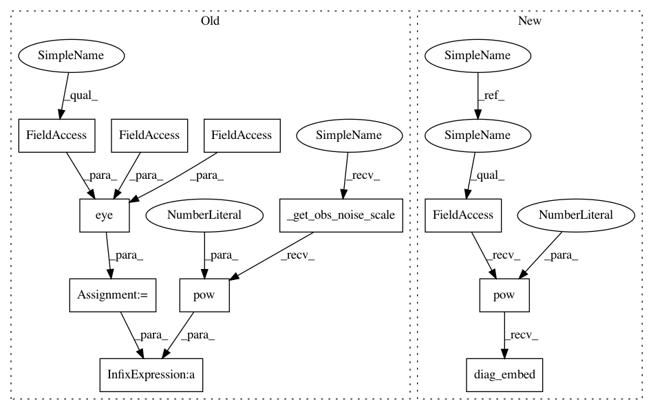

5184f1fc798a7728dd574ae9a351e16869d9ee7b,pyro/contrib/timeseries/lgssmgp.py,GenericLGSSMWithGPNoiseModel,_forecast,#GenericLGSSMWithGPNoiseModel#Any#Any#Any#,134
Before Change
torch.cumsum(predicted_covar2z, dim=0)
if include_observation_noise:
eye = torch.eye(self.obs_dim, device=fs_cov.device, dtype=fs_cov.dtype)
predicted_covar = predicted_covar + self._get_obs_noise_scale().pow(2.0) * eye
return predicted_mean, predicted_covar
After Change
return self._get_dist().filter(targets)
@torch.no_grad()
def _forecast(self, N_timesteps, filtering_state, include_observation_noise=True):
Internal helper for forecasting.
dts = torch.arange(N_timesteps, dtype=self.z_trans_matrix.dtype, device=self.z_trans_matrix.device) + 1.0
dts = dts.unsqueeze(-1).unsqueeze(-1).unsqueeze(-1)
gp_trans_matrix, gp_process_covar = self.kernel.transition_matrix_and_covariance(dt=dts)
gp_trans_matrix = block_diag_embed(gp_trans_matrix)
gp_process_covar = block_diag_embed(gp_process_covar[..., 0:1, 0:1])
N_trans_matrix = repeated_matmul(self.z_trans_matrix, N_timesteps)
N_trans_obs = torch.matmul(N_trans_matrix, self.z_obs_matrix)
// z-state contribution + gp contribution
predicted_mean1 = torch.matmul(filtering_state.loc[-self.state_dim:].unsqueeze(-2), N_trans_obs).squeeze(-2)
predicted_mean2 = torch.matmul(filtering_state.loc[:self.full_gp_state_dim].unsqueeze(-2),
gp_trans_matrix[..., self.obs_selector]).squeeze(-2)
predicted_mean = predicted_mean1 + predicted_mean2
// first compute the contributions from filtering_state.covariance_matrix: z-space and gp
fs_cov = filtering_state.covariance_matrix
predicted_covar1z = torch.matmul(N_trans_obs.transpose(-1, -2),
torch.matmul(fs_cov[self.full_gp_state_dim:, self.full_gp_state_dim:],
N_trans_obs)) // N O O
gp_trans = gp_trans_matrix[..., self.obs_selector]
predicted_covar1gp = torch.matmul(gp_trans.transpose(-1, -2),
torch.matmul(fs_cov[:self.full_gp_state_dim:, :self.full_gp_state_dim],
gp_trans))
// next compute the contribution from process noise that is injected at each timestep.
// (we need to do a cumulative sum to integrate across time for the z-state contribution)
z_process_covar = self.trans_noise_scale_sq.diag_embed()
N_trans_obs_shift = torch.cat([self.z_obs_matrix.unsqueeze(0), N_trans_obs[0:-1]])
predicted_covar2z = torch.matmul(N_trans_obs_shift.transpose(-1, -2),
torch.matmul(z_process_covar, N_trans_obs_shift)) // N O O
predicted_covar = predicted_covar1z + predicted_covar1gp + gp_process_covar + \
torch.cumsum(predicted_covar2z, dim=0)
if include_observation_noise:
predicted_covar = predicted_covar + self.obs_noise_scale.pow(2.0).diag_embed()
return predicted_mean, predicted_covar
@pyro_method
In pattern: SUPERPATTERN
Frequency: 3
Non-data size: 11
Instances
Project Name: uber/pyro
Commit Name: 5184f1fc798a7728dd574ae9a351e16869d9ee7b
Time: 2019-11-12
Author: martinjankowiak@users.noreply.github.com
File Name: pyro/contrib/timeseries/lgssmgp.py
Class Name: GenericLGSSMWithGPNoiseModel
Method Name: _forecast
Project Name: uber/pyro
Commit Name: 5184f1fc798a7728dd574ae9a351e16869d9ee7b
Time: 2019-11-12
Author: martinjankowiak@users.noreply.github.com
File Name: pyro/contrib/timeseries/lgssmgp.py
Class Name: GenericLGSSMWithGPNoiseModel
Method Name: _forecast
Project Name: uber/pyro
Commit Name: 5184f1fc798a7728dd574ae9a351e16869d9ee7b
Time: 2019-11-12
Author: martinjankowiak@users.noreply.github.com
File Name: pyro/contrib/timeseries/gp.py
Class Name: LinearlyCoupledMaternGP
Method Name: _forecast
Project Name: uber/pyro
Commit Name: 5184f1fc798a7728dd574ae9a351e16869d9ee7b
Time: 2019-11-12
Author: martinjankowiak@users.noreply.github.com
File Name: pyro/contrib/timeseries/lgssm.py
Class Name: GenericLGSSM
Method Name: _forecast